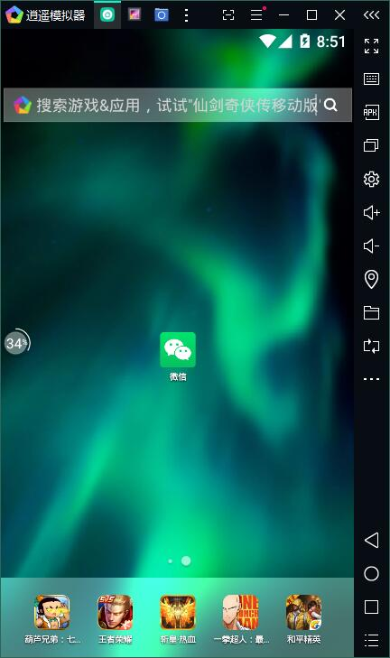
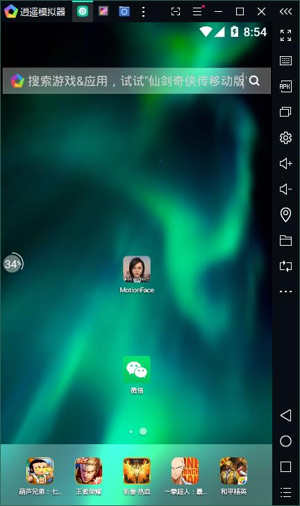
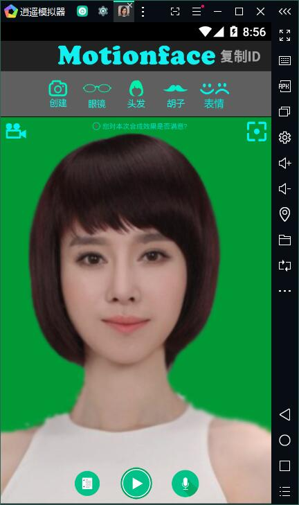
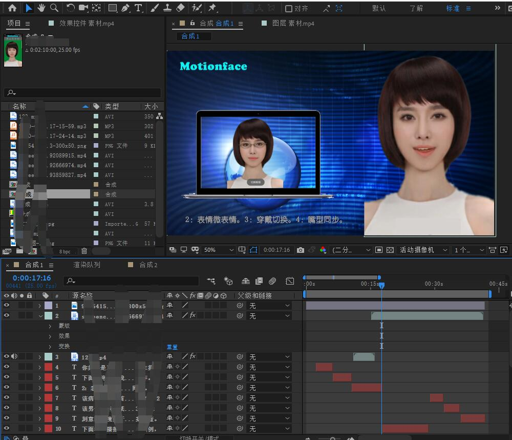

电脑上如何使用Motionface
本教程指导你在电脑上如何使用motionface，并实现虚拟主播功能。模拟器网络配置桥接模式后，可实现与手机一样的电脑上远程控制哦。
1：首先下载好电脑端是安卓模拟器。（以window10 为例，其他系统类似，包括mac），模拟器推荐 逍遥模拟器（点击下载） 雷电模拟器（点击下载）
打开运行模拟器窗口如下。模拟器是一个安卓手机，各种操作如同你的手机一样方便。

2：将下载好的最新版 motionface app 拖入模拟器的窗口。软件会自动安装。安装好如下面截图。

3：安装好打开软件，这时软件如同手机运行效果上一样。

4：如果你做是做视频媒体，可以导出视频。 上图中的美女背景为绿布，方便AE抠图。此刻打开AE,效果抠图后效果如下。

本软件虚拟主播功能助力自媒体视频创作，高效快捷。企业合作可以直接获取算法SDK，在自己软件中集成。